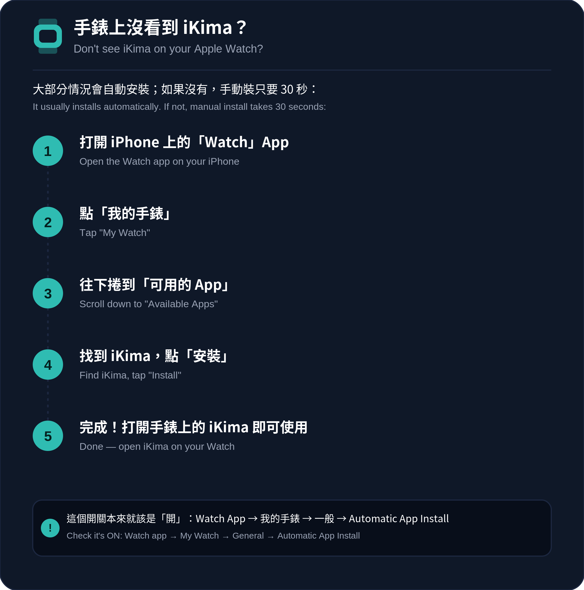

⚡ Quick Setup
Heart Rate & HRV
Why is my heart rate not showing during a session?
Heart rate requires explicit permission. On your iPhone, go to:
Health → your profile photo → Apps → iKima → turn on Heart Rate
Also make sure you are wearing the Watch snugly on your wrist — the optical sensor needs good skin contact.
The heart rate in Session Insight is different from what I see on HomeView — which is correct?
Both are correct, but from different moments:
- HomeView shows the current live reading (updated every few seconds)
- Session Insight shows a snapshot taken at the start and end of your session
If you check HomeView some time after your session ends, the numbers will naturally differ. This is expected.
What is HRV and how is it calculated?
HRV (Heart Rate Variability) measures the variation in time between heartbeats. A higher SDNN value generally indicates a more relaxed, resilient nervous system.
iKima reads the most recent SDNN sample from the past 7 days in Apple Health. Apple Watch measures HRV automatically during sleep or rest — it is not calculated in real time during a session.
My HRV seems very low — is that normal?
HRV varies enormously between individuals (15–100+ ms is a normal range). It is also affected by age, sleep quality, stress, hydration, and recent exercise.
What matters most is your personal trend over time, not comparison with others. Consistent breathing practice has been shown to improve HRV over weeks.
Sessions & Breathing
The session ended before I finished — what happened?
iKima runs the exact number of cycles you selected. When all cycles complete, the session ends naturally and moves to the mood check-in screen.
If the session ended unexpectedly, make sure the Watch app has not been force-quit. If the issue persists, please contact us.
Can I change the speed of the breathing pattern?
Yes. On the pattern selection screen, tap the pace selector before starting. Options are Slow, Standard, and Fast — each adjusts the duration of each breath phase.
Will the session continue if my Watch screen turns off?
Yes. iKima uses an Extended Runtime Session to keep the haptic timer running even when the screen is off. You will still feel the tap guidance on your wrist.
My session data is not showing in the Statistics tab.
Session data is saved on your Watch using SwiftData and synced to your iPhone automatically. If statistics appear missing, try opening the iPhone app — this triggers a sync. Data may take a few seconds to appear after a session ends.
App & Account
Don't see iKima on your Apple Watch? / 手錶上沒看到 iKima？
In most cases, installing iKima on your iPhone automatically installs the Watch app within a few minutes — no action needed. If it still doesn't appear (common after deleting and reinstalling the app), install it manually:
大部分情況下，手機裝好 iKima 後，手錶版會在幾分鐘內自動安裝，不需要額外動作。如果手錶上還是沒看到（刪除後重裝時偶爾會發生），照下面步驟手動安裝：

Do I need an account to use iKima?
No account is required. iKima works entirely on-device with no login, no cloud sync, and no subscription.
Does iKima store my health data in the cloud?
No. Heart rate and HRV data never leave your device. All computation is on-device. Only anonymised, non-identifiable session statistics (pattern used, duration, completion rate) may be included in aggregate analytics — no raw biometric values are transmitted.
How do I delete my data?
To delete all session records: open the iPhone app → History → swipe left on individual sessions to delete, or delete and reinstall the app to clear all local data.
Heart rate data in Apple Health is managed separately via the Health app on your iPhone.
Which Apple Watch models are supported?
iKima requires watchOS 10 or later (Apple Watch Series 4 and newer). An iPhone running iOS 17+ is required as a companion.
Heart rate monitoring requires a Watch model with an optical heart sensor — all supported models include one.